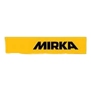
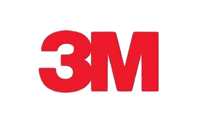
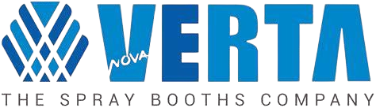
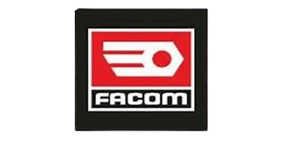
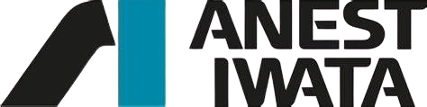
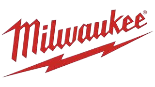

01
Entretenir votre véhicule
Révision, vidange, freinage, climatisation, amortisseurs, géométrie et diagnostic électronique.
Voir les prestationsRéparation carrosserie, peinture automobile, entretien mécanique, rénovation optiques, covering et flocage pour particuliers et professionnels en Dordogne.
Un atelier rénové, des équipements premium et une équipe à l'écoute pour chaque véhicule.
Une lecture simple, des conseils clairs et des interventions adaptées à l'état réel de votre véhicule.
Révision, vidange, freinage, climatisation, amortisseurs, géométrie et diagnostic électronique.
Voir les prestationsRayures profondes, pare-chocs plastique, rénovation optiques, peinture et réparation après accident.
Découvrir la carrosserieVous souhaitez rejoindre une carrosserie moderne, organisée et exigeante ? Présentez votre candidature.
PostulerChaque dommage étant unique, les montants indiqués le sont à titre informatif. Un examen approfondi du véhicule permettra à nos équipes d'établir un devis personnalisé correspondant précisément à l'étendue des réparations nécessaires.

Personnalisez, protégez ou identifiez votre véhicule avec une pose soignée et un rendu professionnel.
Rayures, pare-chocs, carrosserie, optiques et peinture : des exemples concrets pour juger la qualité de finition.








Carrosserie Mounier accompagne les automobilistes de Champcevinel, Périgueux, Boulazac, Trélissac, Chancelade et plus largement de la Dordogne.
Oui. L'équipe examine les dommages, explique les étapes et établit une estimation adaptée à votre véhicule.
Oui, l'atelier prend en charge les véhicules de toutes marques pour la carrosserie, la peinture et l'entretien.
Oui, avec diagnostic préalable et tarif indicatif à partir de 80 € à 150 € selon l'état des phares.
Des produits et méthodes alignés avec les standards professionnels.
Devis clair, explications simples et suivi de chaque demande.
Une organisation moderne au service de la rapidité et de la qualité.
Contrôle final et souci du détail avant restitution du véhicule.
Une carrosserie moderne, équipée, rassurante et tournée vers la qualité durable.